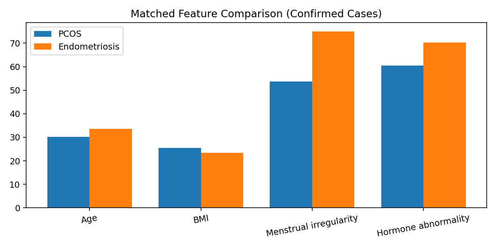
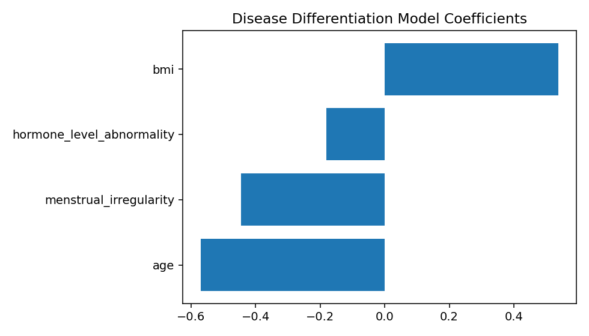

Goal: use a PCOS-like analysis on the supplementary endometriosis dataset, then identify differentiating patterns.
| Feature | PCOS | Endometriosis | PCOS - Endo | p-value |
|---|---|---|---|---|
| Age (mean) | 30.12 | 33.56 | -3.44 | 2.79e-14 |
| BMI (mean) | 25.48 | 23.43 | 2.05 | 5.75e-09 |
| Menstrual irregularity rate | 53.7% | 75.0% | -21.3% | 3.82e-10 |
| Hormone abnormality rate | 60.5% | 70.2% | -9.7% | 0.0074 |


pcos_vs_endo_summary.jsonharmonized_positive_cohorts.csvpcos_vs_endo_diff_tests.csvdisease_classifier_coefficients.csvmatched_feature_comparison.pngdifferentiation_coefficients.png